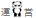

2017.09.09  秋合宿を行いました
9/3〜5の三日間、合宿を行いました。
初日は全員参加の即興ディベート大会を催し、様々な論題で熱い議論が交わされました。
二日目は新入生の部内弁論大会を行いました。9名の弁士が登壇し自らの思いを発しました。
審査の結果、1位が小杉弁士、2位が吉野弁士、3位が鳥居弁士となりました。

9/3〜5の三日間、合宿を行いました。
初日は全員参加の即興ディベート大会を催し、様々な論題で熱い議論が交わされました。
二日目は新入生の部内弁論大会を行いました。9名の弁士が登壇し自らの思いを発しました。
審査の結果、1位が小杉弁士、2位が吉野弁士、3位が鳥居弁士となりました。